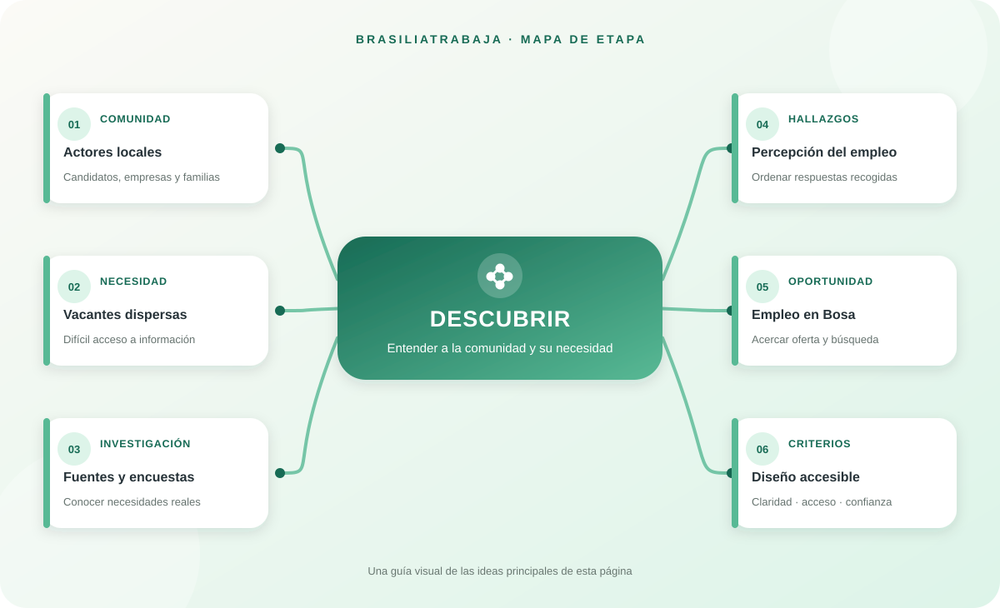

Vacantes difíciles de encontrar
Las oportunidades pueden publicarse en distintos canales y no siempre llegan a las personas del sector. La etapa identifica qué información buscan candidatos y empleadores para orientar el proyecto.


METODOLOGÍA · ETAPA 1 DE 4
Reconocer una necesidad real antes de proponer una solución: quiénes buscan empleo, qué obstáculos encuentran y cómo llegan hoy las ofertas a la comunidad.

Las oportunidades pueden publicarse en distintos canales y no siempre llegan a las personas del sector. La etapa identifica qué información buscan candidatos y empleadores para orientar el proyecto.
La revisión de fuentes y las encuestas ayudan a comprender a quiénes se dirige la propuesta. En las respuestas registradas, 35 de 42 participantes (83,3 %) estaban en el rango de 16 a 25 años.